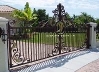

Driveway Gates
Pacific Tide

Driveways are designed and built to suit the style and layout of
the building that they are connecting to. Building a Driveway
gates provide security, privacy and render a stylish look for
the driveway and the enclosed structure. Driveway gates
serve as perfect security solution for your home. They act as a
barrier against unwanted salesmen, prevent children from
running to the main road and also check easy access to your
home.
With our driveway gates you can build a wide range of
exclusive Decor including Matching Fence Panels
Golden Orchid

When selecting a Custom Gates, you should choose whether you
simply want to replace the Gate that you use to walk in and out of,
or if you want to replace all of the Gates on your Fence including
the Driveway Gate with Custom Gates. If you choose to replace all
of the Gates on your Fence with Custom Gates, it is very important
that you make sure that all of the Gates match and that they are all
made out of Aluminum for a virtually maintenance free Gates. Many
times, you can purchase Wrought Iron Gates for a low price, but
they are often very flimsy and break easily. If you are going to
replace all of your Gates with Aluminum Gates, you should ensure
that you choose the best.
One of the first things that should be done when selecting a
Custom Gate is researching various styles of Gates Designs. You
must carefully look at your home to decide what type of Custom
gate would compliment these things. You can select from the
simple and efficient regular Gate Design to the highly detailed and
sophisticated Custom Gate. It is all up to you!
Sea Shell
Sea Shells: This Decorative Driveway Gate Design is available in a matching
Walk Gates and at Picket Fences section. Very strong and Decorative
Aluminum Gate, One of our most popular Designs. A large variety of colors to
choose from that are Powder Coat Electrostatic Oven Baked for a superb
lasting finish. Price is for Aluminum, e-mail us for a quote in Wrought iron. Sea
Shells Decorative Aluminum Driveway Gate Frame is 2"x 2" with a center
divider 2"x 2" this Driveway Gate is 10ft in width, 6ft at sides and arching to 7ft
6" at center, Design are 1/4"x 2" Flat stock, Pickets 1"x 1" with 2 slip in collars
in each, Gate Frame 2"x 2", top horizontal in a Arch 1"x 2". Because of the
complexity of the Design is not available in Height less than 5ft.